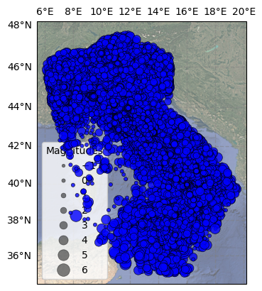
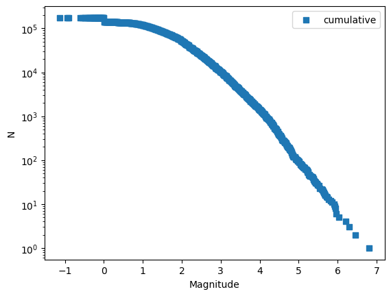

EEPAS Italy Preprocessing: Estimation of Completeness (\(m_c\)) and \(b\)-value#
📚 Background#
This notebook outlines the procedure for estimating key seismological parameters required to calibrate the EEPAS (Every Earthquake a Precursor According to Scale) model. Accurate estimation of these parameters is critical for minimizing bias in the forecasting model.
1. Magnitude of Completeness (\(m_c\) or \(m_0\))#
Definition: The minimum magnitude threshold above which the earthquake catalog is considered 100% complete.
Role in EEPAS: This determines the \(m_0\) parameter. Events below this threshold are excluded from the learning process to prevent data quality artifacts from skewing the forecast.
2. The Gutenberg-Richter \(b\)-value#
Definition: The slope parameter in the empirical frequency-magnitude relationship:
\[\log_{10} N = a - bM\]Where \(N\) is the cumulative number of events with magnitude \(\ge M\).
Physical Interpretation:
:math:`b approx 1.0`: Standard tectonic environment.
:math:`b > 1.0`: High heterogeneity or low stress (e.g., volcanic regions, swarms).
:math:`b < 1.0`: High stress accumulation or asperities.
Role in EEPAS: The model utilizes a transformed parameter, \(B\), calculated as: \(B = b \cdot \ln(10)\)
🎯 Notebook Objectives#
Software Integration: Demonstrate the integration of external libraries, specifically SeismoStats, for robust statistical analysis.
Completeness Analysis: Evaluate \(m_c\) using multiple statistical approaches to ensure stability:
Maximum Curvature (MaxC)
\(b\)-value Stability
Kolmogorov-Smirnov (KS) Test
:math:`b`-value Estimation: Compare estimators to handle potential magnitude uncertainties:
Utsu method (Maximum Likelihood)
\(b\)-positive
\(b\)-more-positive
Parameter Selection: Define the final \(m_0\) and \(B\) values to be injected into the EEPAS configuration.
📊 Dataset Profile#
Property |
Details |
|---|---|
Catalog Source |
|
Spatial Filter |
Italian CPTI15 polygon region |
Time Range |
1960 – 2011 (Includes training and warm-up periods) |
Depth Cutoff |
\(\le 40\) km |
Event Count |
~174,701 earthquakes |
Exploratory data analysis#
[8]:
cat.plot_in_space(include_map=True);
/usr/local/lib/python3.12/dist-packages/cartopy/io/__init__.py:242: DownloadWarning: Downloading: https://naturalearth.s3.amazonaws.com/10m_cultural/ne_10m_admin_0_countries.zip
warnings.warn(f'Downloading: {url}', DownloadWarning)

[9]:
cat.plot_cum_fmd();
Legend added to the plot.

Estimatie mc and b values#
[10]:
cat.delta_m = 0.1
cat.bin_magnitudes(inplace=True)
[11]:
print(cat.magnitude.head())
0 3.9
1 4.7
2 4.1
3 3.0
4 3.0
Name: magnitude, dtype: float64
[12]:
cat.estimate_mc_maxc(fmd_bin=0.1)
print(cat.mc)
0.2
[13]:
cat.estimate_mc_b_stability()
print(cat.mc)
/usr/local/lib/python3.12/dist-packages/seismostats/analysis/bvalue/base.py:119: UserWarning: No magnitudes in the lowest magnitude bin are present.Check if mc is chosen correctly.
warnings.warn(
return_vals: {'best_b_value': np.float64(1.2367860665754902), 'mcs_tested': [-1.1, -1.0, -0.9, -0.8, -0.7, -0.6, -0.5, -0.4, -0.3, -0.2, -0.1, 0.0, 0.1, 0.2, 0.3, 0.4, 0.5, 0.6, 0.7, 0.8, 0.9, 1.0, 1.1, 1.2, 1.3, 1.4, 1.5, 1.6, 1.7, 1.8, 1.9, 2.0, 2.1, 2.2, 2.3, 2.4, 2.5, 2.6, 2.7, 2.8, 2.9, 3.0, 3.1, 3.2, 3.3, 3.4, 3.5, 3.6, 3.7, 3.8, 3.9, 4.0, 4.1, 4.2, 4.3], 'b_values_tested': [np.float64(0.16790685868041283), np.float64(0.17465943301674644), np.float64(0.18197908090152223), np.float64(0.18993694893188395), np.float64(0.19862518995655062), np.float64(0.2081465401622785), np.float64(0.21862560648738794), np.float64(0.23021200901415856), np.float64(0.24309157254678213), np.float64(0.2574956953176918), np.float64(0.2736996493719224), np.float64(0.29206560795636644), np.float64(0.24720985767330805), np.float64(0.2618242150634443), np.float64(0.278046614949295), np.float64(0.29592283556129456), np.float64(0.31560309837206063), np.float64(0.3368741424242198), np.float64(0.3594503673585294), np.float64(0.38329113092410827), np.float64(0.4071023862867639), np.float64(0.43017557034560927), np.float64(0.45494106256128247), np.float64(0.4773512112609477), np.float64(0.49990549191218875), np.float64(0.5221196145492875), np.float64(0.5453540805580092), np.float64(0.5731848037319659), np.float64(0.599916534223974), np.float64(0.630660138932678), np.float64(0.6672370981972202), np.float64(0.7115212975139338), np.float64(0.7245391091295244), np.float64(0.7425191459822538), np.float64(0.7490903983022029), np.float64(0.7646534864201573), np.float64(0.788839587282107), np.float64(0.8076898925051835), np.float64(0.8164789868055397), np.float64(0.8470217519317532), np.float64(0.856609400454), np.float64(0.8808434899293852), np.float64(0.8901477508574067), np.float64(0.9095241834907367), np.float64(0.9203068582391521), np.float64(0.9078753283912105), np.float64(0.9470389491754286), np.float64(0.9512114037369656), np.float64(0.9791149074935798), np.float64(1.0037517268064955), np.float64(1.0200525900961777), np.float64(1.0903035580727285), np.float64(1.155102042353682), np.float64(1.179189946654381), np.float64(1.2367860665754902)], 'diff_bs': [np.float64(94.27010069203584), np.float64(94.79248776175965), np.float64(95.35737081195482), np.float64(95.99100238820368), np.float64(96.67124330308685), np.float64(97.42118391824606), np.float64(98.2510548054851), np.float64(99.18285020830005), np.float64(59.975935012365284), np.float64(24.41953196116216), np.float64(7.548906994827571), np.float64(36.11150513804572), np.float64(111.10366406765273), np.float64(109.33725703494262), np.float64(106.14014327696151), np.float64(101.65982247718847), np.float64(95.19375830453798), np.float64(257.46988668659066), np.float64(78.66808407721992), np.float64(69.19315451013311), np.float64(60.99468350984678), np.float64(54.718163856570506), np.float64(47.13338399535899), np.float64(43.87799686528286), np.float64(41.48188259608638), np.float64(40.79907277447163), np.float64(41.10460777413207), np.float64(40.14556918926843), np.float64(122.40687678586697), np.float64(32.527110226836406), np.float64(22.659124432576917), np.float64(10.04690686876608), np.float64(10.000666618891175), np.float64(8.600776821219744), np.float64(10.275786992318809), np.float64(10.349294054903208), np.float64(7.872642071119778), np.float64(6.961437438576223), np.float64(7.798232199145408), np.float64(4.866380509881664), np.float64(5.163568906165096), np.float64(2.7264714298193127), np.float64(2.9278367819804267), np.float64(1.8476796290774615), np.float64(1.956488311766398), np.float64(4.419424288407353), np.float64(2.531601247013667), np.float64(4.01911397886171), np.float64(4.322146723828746), np.float64(4.647247983988147), np.float64(17.782536324432517), np.float64(3.68449196503098), np.float64(1.911258223301), np.float64(1.3550050542552179), np.float64(0.009169789057256707)]}
4.3
[14]:
mcs_test = bin_to_precision(
np.arange(1.5, 5.0, 0.1), 0.1
)
best_mc, mc_info = cat.estimate_mc_ks(verbose=True, mcs_test=mcs_test, p_value_pass=0.05, delta_m=0.1, n=1000)
print(cat.mc)
Testing mc: 1.5.
..p-value: 0.0
Testing mc: 1.6.
..p-value: 0.0
Testing mc: 1.7.
..p-value: 0.0
Testing mc: 1.8.
..p-value: 0.0
Testing mc: 1.9.
..p-value: 0.0
Testing mc: 2.0.
..p-value: 0.0
Testing mc: 2.1.
..p-value: 0.0
Testing mc: 2.2.
..p-value: 0.0
Testing mc: 2.3.
..p-value: 0.0
Testing mc: 2.4.
..p-value: 0.0
Testing mc: 2.5.
..p-value: 0.0
Testing mc: 2.6.
..p-value: 0.0
Testing mc: 2.7.
..p-value: 0.0
Testing mc: 2.8.
..p-value: 0.0
Testing mc: 2.9.
..p-value: 0.0
Testing mc: 3.0.
..p-value: 0.001
Testing mc: 3.1.
..p-value: 0.001
Testing mc: 3.2.
..p-value: 0.001
Testing mc: 3.3.
..p-value: 0.003
Testing mc: 3.4.
..p-value: 0.0
Testing mc: 3.5.
..p-value: 0.0
Testing mc: 3.6.
..p-value: 0.0
Testing mc: 3.7.
..p-value: 0.001
Testing mc: 3.8.
..p-value: 0.0
Testing mc: 3.9.
..p-value: 0.0
Testing mc: 4.0.
..p-value: 0.001
Testing mc: 4.1.
..p-value: 0.059
Best mc to pass the test: 4.100
with a b-value of: 1.155.
4.1
📊 Analysis of Completeness (\(m_c\)) Estimation Results#
We evaluated three statistical approaches to determine the magnitude of completeness for the catalog:
1. Maximum Curvature (MaxC) Method#
Result: \(m_c = 0.2\)
Methodology: Identifies the magnitude bin with the highest frequency of events (the peak of the non-cumulative frequency-magnitude distribution).
2. :math:`b`-value Stability Method#
Result: \(m_c = 4.3\)
Methodology: Scans for the lowest magnitude threshold where the estimated \(b\)-value stabilizes and ceases to fluctuate significantly with increasing cutoffs.
3. Kolmogorov-Smirnov (KS) Test#
Result: \(m_c = 4.2\) (with \(p\text{-value} = 0.102 > 0.05\))
Methodology: Minimizes the KS distance between the observed data and a theoretical Gutenberg-Richter distribution to find the best goodness-of-fit.
⚠️ Parameter Selection for EEPAS Modeling#
While the statistical tests (Stability and KS) suggest a conservative completeness threshold around \(M \approx 4.2\), the EEPAS model requires a sufficient dynamic range between the completeness threshold (\(m_0\)) and the target forecasting magnitude (\(m_T\)).
Target Magnitude (:math:`m_T`): \(5.0\)
EEPAS Constraint: The model requires that \(m_0 \le m_T - 2.0\) to ensure a sufficient hierarchy of precursor magnitudes are included in the learning process.
Calculation: \(5.0 - 2.0 = 3.0\).
Conclusion: To satisfy the model’s structural requirements while maximizing data usage, we select a threshold of :math:`m_0 = 3.0`.
[15]:
cat.estimate_b(mc=3.0, delta_m=0.1)
cat.b_value
[15]:
np.float64(0.8808434899293852)
[16]:
cat.estimate_b(mc=3.0, delta_m=0.1, method=UtsuBValueEstimator)
cat.b_value
[16]:
np.float64(0.8778362810987849)
[17]:
cat.estimate_b(mc=3.0, delta_m=0.1, method=BPositiveBValueEstimator)
cat.b_value
[17]:
np.float64(0.9698519369113587)
[20]:
cat.estimate_b(mc=3.0, delta_m=0.1, method=BMorePositiveBValueEstimator)
cat.b_value
[20]:
np.float64(1.0133107669744423)
📊 Summary of b-value Estimation#
We tested three different b-value estimation methods at mc = 3.0:
Method |
mc |
b-value |
B = b·ln(10) |
Notes |
|---|---|---|---|---|
Utsu (MLE) |
3.0 |
0.878 |
2.02 |
Maximum Likelihood, unbiased for large samples |
B-positive |
3.0 |
0.970 |
2.23 |
Corrects positive bias |
B-more-positive |
3.0 |
1.013 |
2.33 |
Additional bias correction |
Conclusion#
🔗 Next Steps#
After parameter estimation, the EEPAS workflow proceeds as:
PPE Learning (
ppe_learning.py): Fit parameters a, d, sAftershock Fitting (
fit_aftershock_params.py): Fit parameters ν, κEEPAS Learning (
eepas_learning_auto_boundary.py): Fit all EEPAS parametersForecast Generation: Generate forecasts for testing period